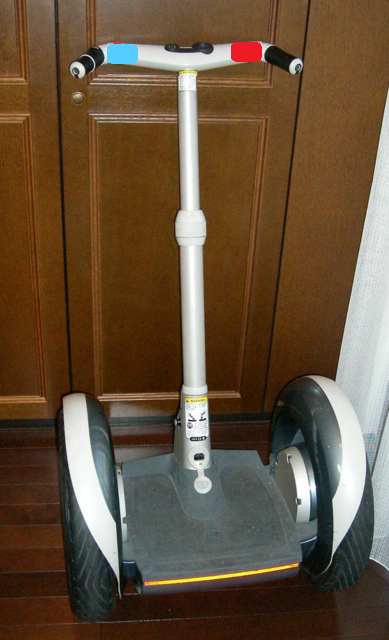
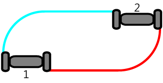
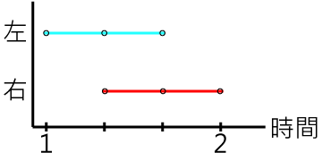
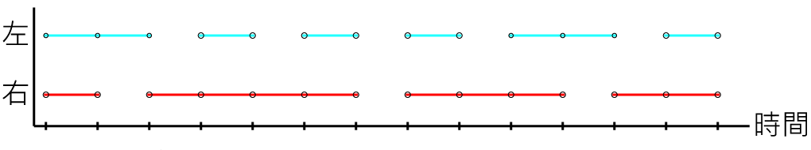

賽格威
| 在海狸世界裡有一種非常流行的個人運輸載具：賽格威。它是由電力驅動而且只要用兩個按鈕就可以控制：左邊的藍色按鈕控制左輪的轉動；右邊按鈕控制右輪的轉動。 |  |
當只有左邊按鈕按下時，左邊輪子轉動達到右轉的效果。同理，當只有右邊按鈕按下時，右邊輪子轉動達到左轉的效果。當兩個按鈕同時按下時，兩個輪子同時轉動，這時賽格威會直直前進。
下圖中，左圖代表一台賽格威由位置1移動到位置2兩個輪子的路徑圖。右圖代表左邊藍色按鈕（L）和右邊紅色按鈕（R）在四個時間點被按下的狀況。
|  |  |
一開始賽格威在位置1的地方，這時按下左邊藍色按鈕，所以賽格威向右轉，接著兩個按鈕都被按下，賽格威就直直前進，最後只按下右邊紅色按鈕，這時賽格威左轉到達位置2。上述的操作讓賽格威在移動後，仍然面朝原本的方向（向上）。

假設有一台賽格威一開始面對著上方，在經過上述的按鈕操作後，最後賽格威會面朝哪個方向？